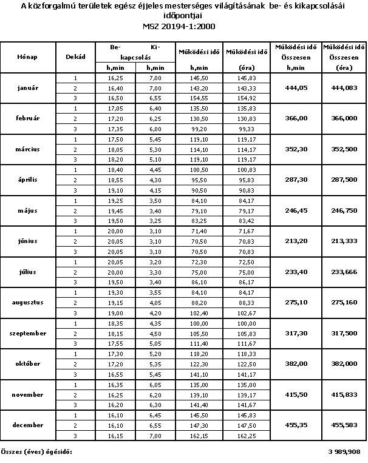

Irodai Asszisztens
Közvilágítás modul
Helyszín kereső
TXT Mentés
Kattintson a térképre koordináták rögzítéséhez...
Közvilágításnaptár

KÖZVILÁGÍTÁS HIBABEJELENTŐ
TIPP:
A bejelentéshez az oldal aljáig kell görgetni.